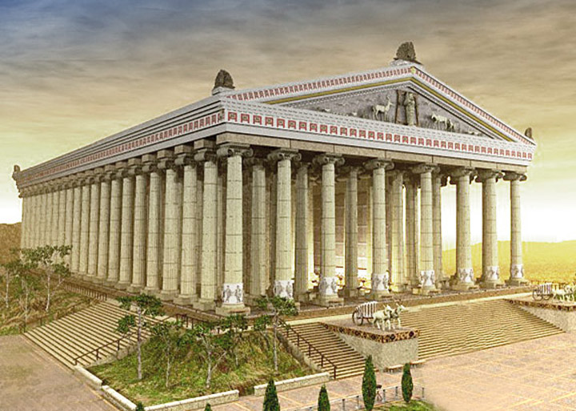

Artemidės šventykla – vienas iš septynių pasaulio stebuklų, stovėjusių Efese (dabartinė Turkija). Pagal legendą Efesą įkūrė amazonės – karingų moterų gentis. Paskutinė Artemidės šventykla jame buvo statoma daug kartų. Ankstyvieji mediniai statiniai pasenę suirdavo, sudegdavo arba sugriūdavo per žemės drebėjimus, todėl VI a. pr. m. e. viduryje buvo nutarta globėjai deivei Artemidei pastatyti didingą buveinę, negailint nei lėšų, nei laiko. Geriausiu buvo pripažintas Chersitrono projektas. Jis pasiūlė šventyklą statyti iš marmuro, pelkėje prie upės. Chersitronas nutarė, kad minkšta pelkėta dirva bus geras amortizatorius per žemės drebėjimus. O kad savo svorio slegiamas marmurinis kolosas nenugrimztų į žemę, buvo iškasta gili pamatų duobė ir pripildyta medžio anglies bei vilnos mišinio - padaryta kelių metrų storio pagalvė. Šventyklos statyba buvo labai sudėtinga, ir kada didysis architektas būdavo bejėgis, jam į pagalbą ateidavo pati Artemidė…Cheristonas nesulaukė statybos pabaigos. Šventykla buvo baigta apie 550 m. pr. m. e. Nežinoma, kaip ji buvo papuošta, kokios statulos joje stovėjo, kokios buvo freskos ir kokie paveikslai, kaip atrodė pati Artemidės statula. Visa, ką buvo padaręs Chersitronas ir jo įpėdiniai, sunaikino Herostratas. Eilinis žmogus nutarė tapti nemirtingas, atlikdamas nusikaltimą - 356 m. pr. m. e. liepos 21 d. sudegindamas Artemidės šventyklą.
© 2021 Matthew